Linux：命令、权限与软件部署
Linux是一套免费使用和自由传播的操作系统。说到操作系统，大家比较熟知的应该就是Windows和MacOS操作系统，我们今天所学习的Linux也是一款操作系统。
我们作为javaEE开发工程师，将来在企业中开发时会涉及到很多的数据库、中间件等技术，比如MySQL、Redis、MQ等技术，而这些应用软件大多都是需要安装在Linux系统中使用的。我们做为开发人员，是需要通过远程工具连接Linux操作系统，然后来操作这些软件的。而且一些小公司，可能还需要我们自己在服务器上安装这些软件。
所以，不管从企业的用人需求层面，还是个人发展需要层面来讲，我们作为服务端开发工程师，Linux的基本使用是我们必不可少的技能。
**对于Linux的常用指令的学习，最好的学习方法就是：**多敲
课程内容：
- Linux概述
- Linux常用命令
- Linux软件安装
- 项目部署
Linux概述
主流操作系统
不同领域的主流操作系统，主要分为以下这么几类： 桌面操作系统、服务器操作系统、移动设备操作系统、嵌入式操作系统。接下来，这几个领域中，代表性的操作系统是那些?
1). 桌面操作系统
操作系统 | 特点 |
Windows | 用户数量最多 |
MacOS | 操作体验好，办公人士首选 |
Linux | 用户数量少(桌面操作系统,Linux使用较少) |
2). 服务器操作系统
操作系统 | 特点 |
Unix | 安全、稳定、付费 |
Linux | 安全、稳定、免费、占有率高 |
Windows Server | 付费、占有率低 |
3). 移动设备操作系统
操作系统 | 特点 |
Android | 基于 Linux 、开源，主要用于智能手机、平板电脑和智能电视 |
IOS | 苹果公司开发、不开源，用于苹果公司的产品，例如：iPhone、 iPad |
HarmonyOS | 华为公司开发、开源，目前用于华为公司的产品 |
Linux系统版本
Linux系统的版本分为两种，分别是： 内核版 和 发行版。
1). 内核版
- 由Linus Torvalds及其团队开发、维护
- 免费、开源
- 负责控制硬件
2). 发行版
- 基于Linux内核版进行扩展
- 由各个Linux厂商开发、维护
- 有收费版本和免费版本
我们使用Linux操作系统，实际上选择的是Linux的发行版本。在linux系统中，有各种各样的发行版本，具体如下：
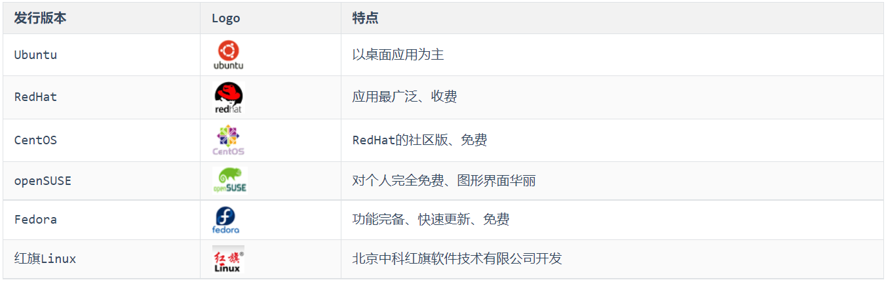
除了上述罗列出来的发行版，还有很多Linux发行版，这里，我们就不再一一列举了。
系统安装
安装方式
Linux系统的安装方式，主要包含以下两种：
虚拟机（Virtual Machine）指通过软件模拟的具有完整硬件系统功能、运行在完全隔离环境中的完整计算机系统。常用虚拟机软件：
- VMWare
- VirtualBox
- VMLite WorkStation
- Qemu
- HopeddotVOS
那么我们就可以在课程中将Linux操作系统安装在虚拟机中，我们课上选择的虚拟机软件是VMware。
安装VMware
在我们的课程资料中提供了VMware的安装程序。找到课程资料中的 Vmware的安装包（exe文件），然后双击下一步下一步的安装即可。
备注：如果之前安装过，就不用安装了。不要卸载！！！！不要卸载！！！！ 不要卸载！！！！
安装步骤:
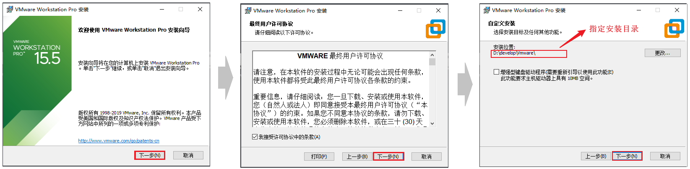
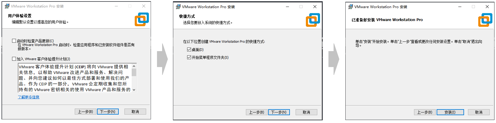
以上就是VMware在安装时的每一步操作，基本上就是点击 "下一步" 一直进行安装。
挂载Linux系统
1). 打开Vmware虚拟机，打开 编辑 -> 虚拟网络编辑器(N)...
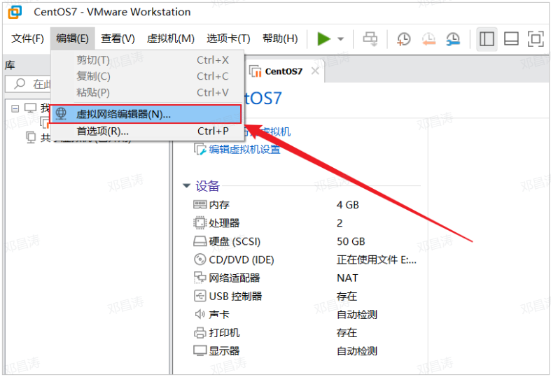
选择 NAT模式，然后选择右下角的 更改设置。
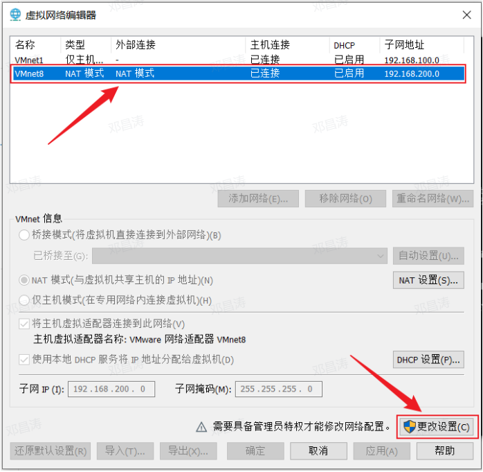
设置子网IP为 192.168.100.0，然后选择 应用 -> 确定。
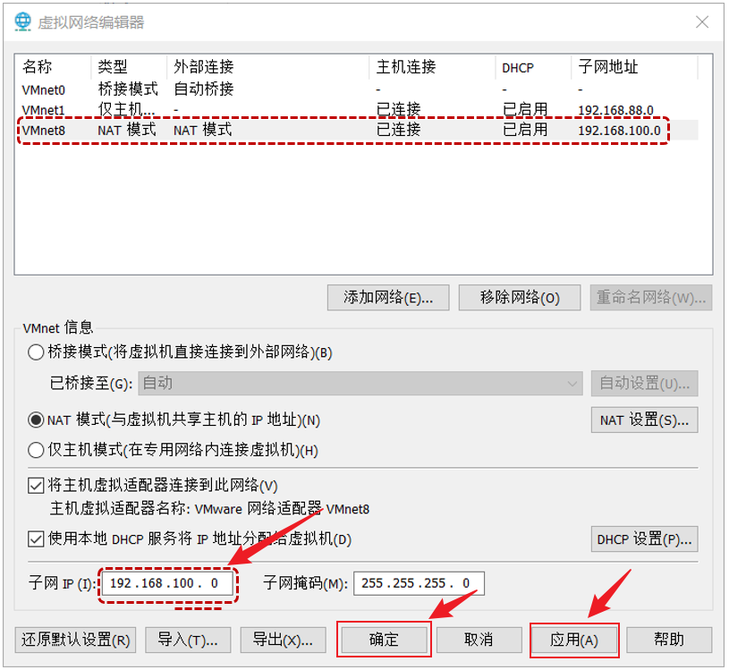
2). 解压 资料/Linux``镜像``/CentOS7-1.zip 到一个比较大的磁盘中 (没有中文的目录)。
3). 打开解压目录，双击 .vmx 文件，选择以 Vmware Workstation 打开这个文件。
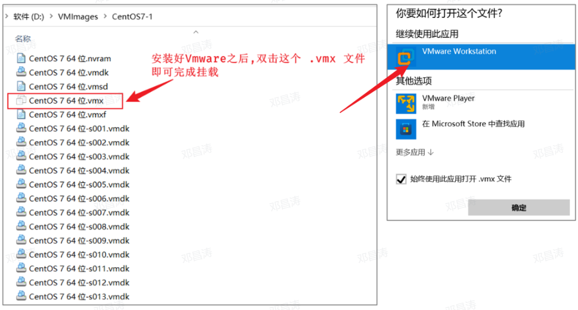
4). 挂载完毕之后，启动Linux服务器。
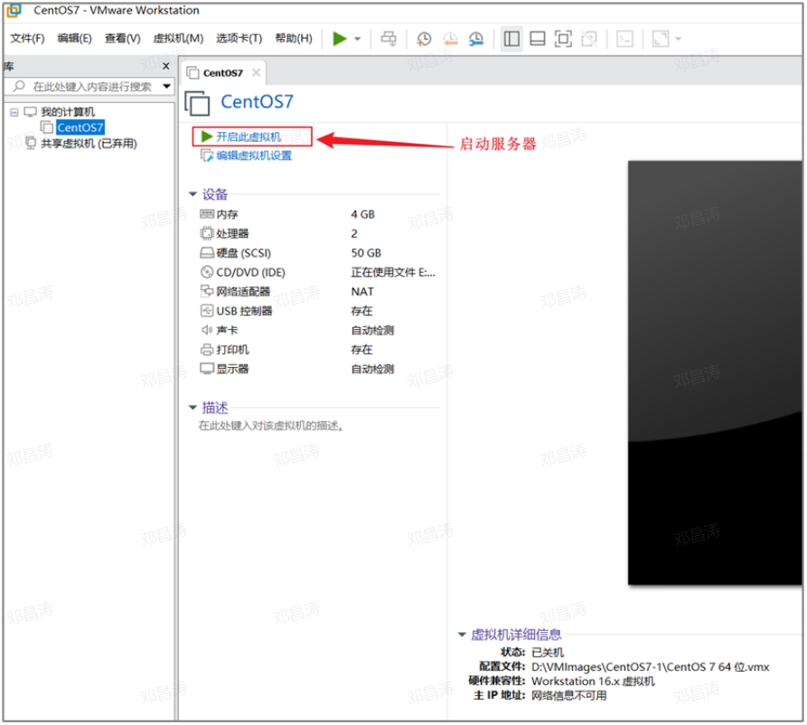
启动过程中，如果出现如下界面，选择 我已移动该虚拟机。
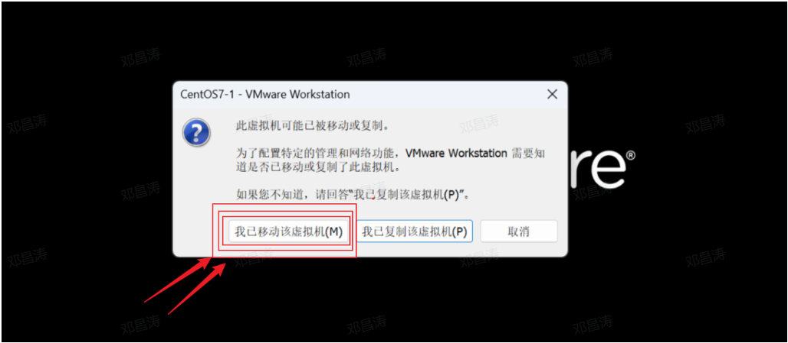
5). 启动完毕之后，登录服务器。 输入用户名：root，密码：1234（注意：linux系统输入密码是不显示的，输入完毕，回车即可登录）
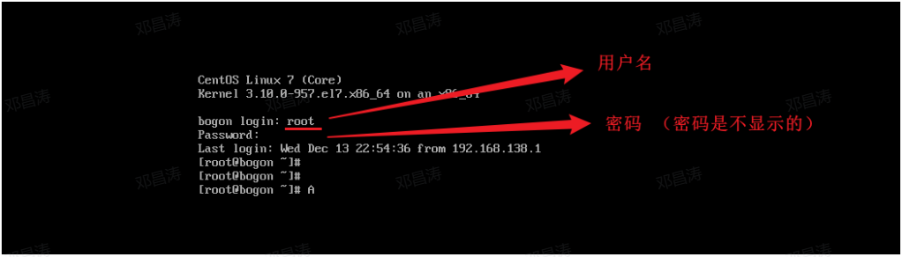
安装SSH连接工具
SSH连接工具介绍
Linux已经安装并且配置好了，接下来我们要来学习Linux的基本操作指令。而在学习之前，我们还需要做一件事情，由于我们企业开发时，Linux服务器一般都是在远程的机房部署的，我们要操作服务器，不会每次都跑到远程的机房里面操作，而是会直接通过SSH连接工具进行连接操作。
SSH（Secure Shell），建立在应用层基础上的安全协议。常用的SSH连接工具:
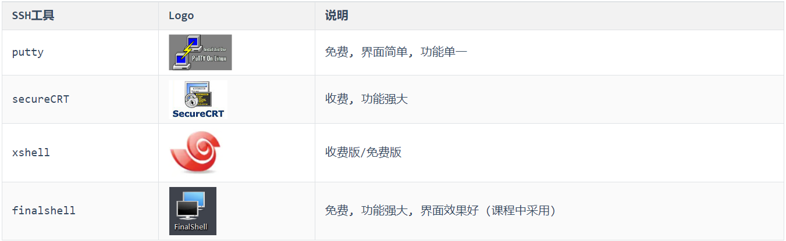
FinalShell安装
在课程资料中，提供了finalShell的安装包（"资料/03. 远程连接工具"）。
双击.exe文件，然后进行正常的安装即可。
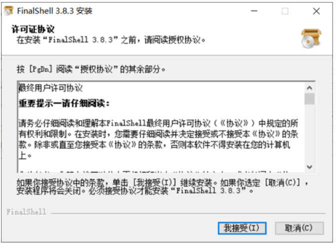
连接Linux
- 打开FinalShell，选择SSH连接。
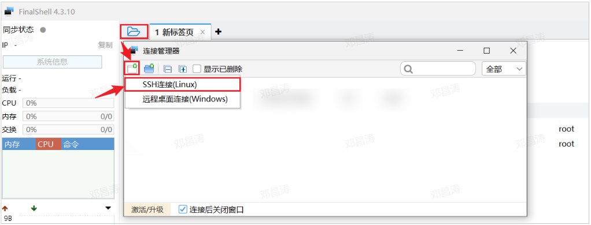
- 连接服务器，输入服务器的信息，IP固定的：
192.168.100.128，用户名：root，密码：1234
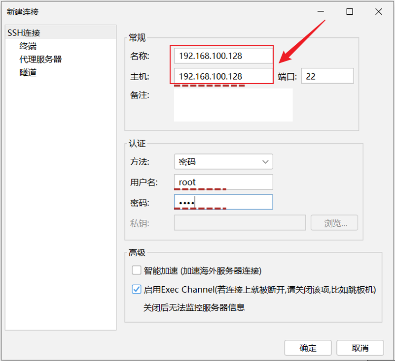
- 配置完毕后,双击即可连接服务器。
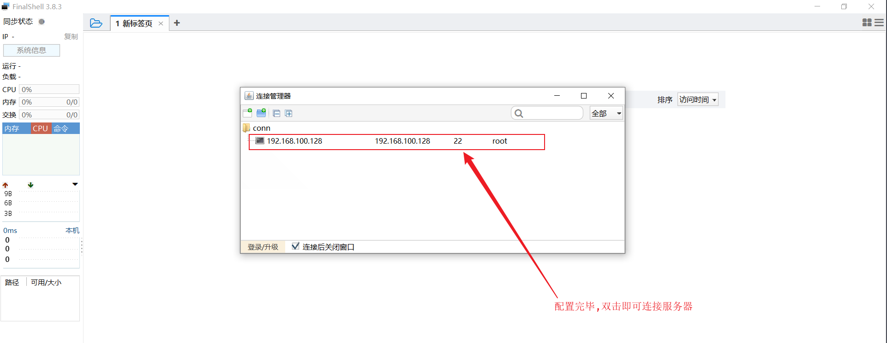
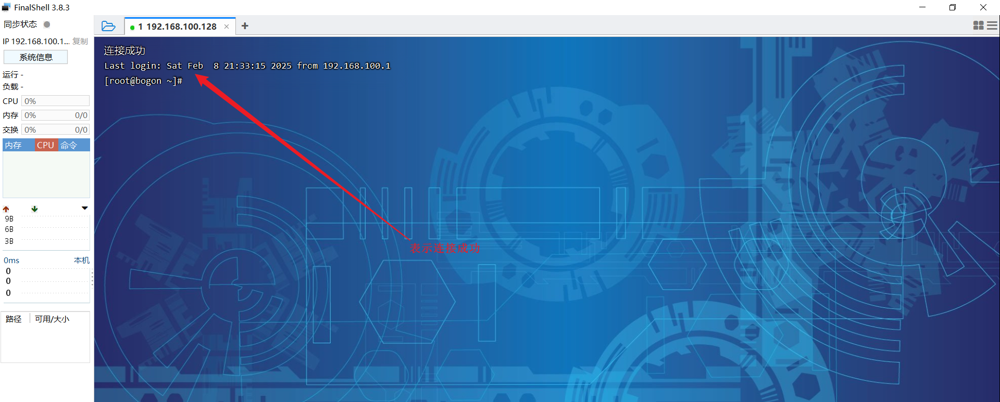
目录结构
登录到Linux系统之后，我们需要先来熟悉一下Linux的目录结构。在Linux系统中，也是存在目录的概念的，但是Linux的目录结构和Windows的目录结构是存在比较多的差异的 在Windows目录下，是一个一个的盘符(C盘、D盘、E盘)，目录是归属于某一个盘符的。Linux系统中的目录有以下特点：
- / 是所有目录的顶点
- 目录结构像一颗倒挂的树
Linux 和 Windows的目录结构对比:
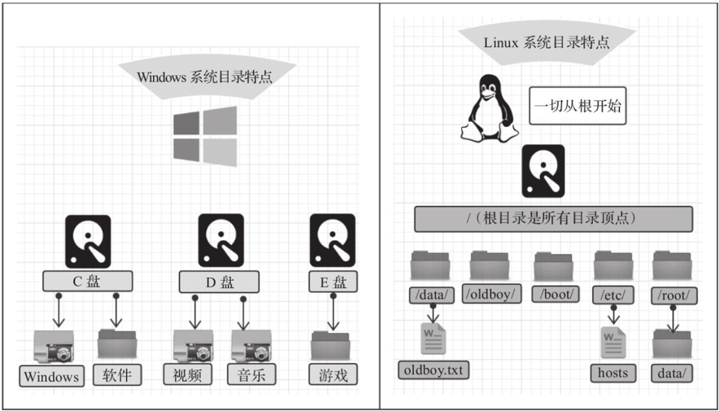
Linux的目录结构，如下：
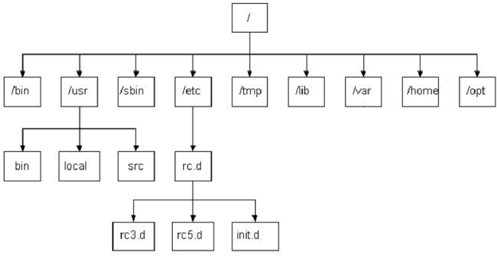
根目录 / 下各个目录的作用及含义说明:
编号 | 目录 | 含义 |
1 | /bin | 存放二进制可执行文件 |
2 | /boot | 存放系统引导时使用的各种文件 |
3 | /dev | 存放设备文件 |
4 | /etc | 存放系统配置文件 |
5 | /home | 存放系统用户的文件 |
6 | /lib | 存放程序运行所需的共享库和内核模块 |
7 | /opt | 额外安装的可选应用程序包所放置的位置 |
8 | /root | 超级用户目录 |
9 | /sbin | 存放二进制可执行文件，只有root用户才能访问 |
10 | /tmp | 存放临时文件 |
11 | /usr | 存放系统应用程序 |
12 | /var | 存放运行时需要改变数据的文件，例如日志文件 |
Linux常用命令
使用 su - 用户名 --> 实现切换用户登陆
cat /etc/passwd --> 查找当前可以选择的用户
# 1. 默认端口，默认当前用户
ssh 192.168.1.100
# 2. 指定用户，默认端口
ssh root@192.168.1.100
# 3. 指定端口
ssh -p 2222 admin@192.168.1.100
# 4. 指定网卡（多网卡时）
ssh -b 192.168.1.10 user@192.168.1.100
# 5. 跳板机连接
ssh -J jumphost@10.0.0.1 user@192.168.1.100
# 6. 使用密钥文件
ssh -i ~/.ssh/mykey.pem user@192.168.1.100
# 7. 开启调试模式（排查连接问题）
ssh -vvv user@192.168.1.100
使用命令
source 文件名 用于执行当前shell环境中执行文件 ;
# ssh 用户名@远程服务器地址
ssh user1@172.24.210.101
# 指定端口
ssh -p 2211 root@140.206.185.170
# ssh 大家族
ssh user@ip -p22 # 默认用户名为当前用户名，默认端口为 22
ssh-keygen # 为当前用户生成 ssh 公钥 + 私钥
ssh-keygen -f keyfile -i -m key_format -e -m key_format # key_format: RFC4716/SSH2(default) PKCS8 PEM
ssh-copy-id user@ip:port # 将当前用户的公钥复制到需要 ssh 的服务器的 ~/.ssh/authorized_keys，之后可以免密登录
Linux命令初体验
Linux 命令格式：
command[``-options``] [``parameter``]说明：
command：命令名
[-options]：选项，可用来对命令进行控制，也可以省略 （可选）
[parameter]：参数，可以是零个、一个或多个（可选）
例如：
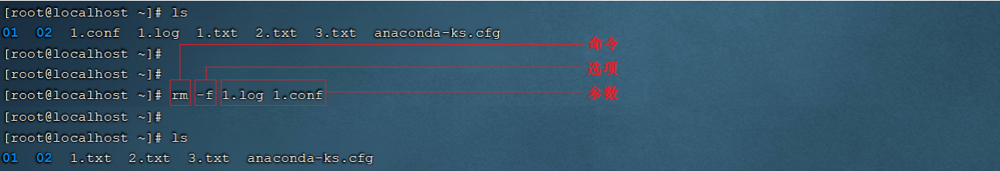
使用技巧：
- Tab键自动补全
- 连续两次Tab键，给出操作提示
- 使用上下箭头快速调出曾经使用过的命令
- 使用clear命令或Ctrl+l快捷键实现清屏
目录操作命令
ls
- 作用: 显示指定目录下的内容
- 语法:
ls [-al][dir] - 说明:
-a 显示所有文件及目录 (. 开头的隐藏文件也会列出)
-l 除文件名称外，同时将文件型态(d表示目录，-表示文件)、权限、拥有者、文件大小等信息详细列出
- 注意:
由于我们使用ls命令时经常需要加入-l选项，所以Linux为 ls -l 命令提供了一种简写方式，即 ll
- 常见用法:
ls -al 查看当前目录的所有文件及目录详细信息
ls -al /etc 查看/etc目录下所有文件及目录详细信息
ll 查看当前目录文件及目录的详细信息
操作示例:
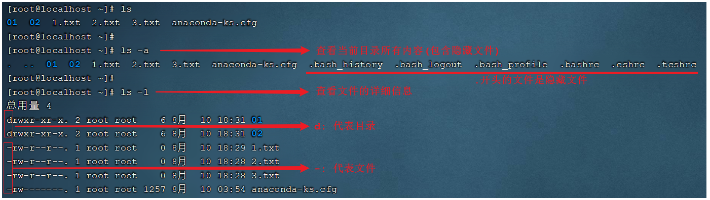

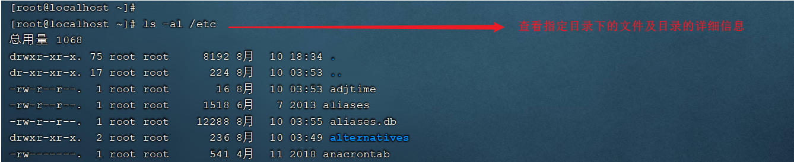
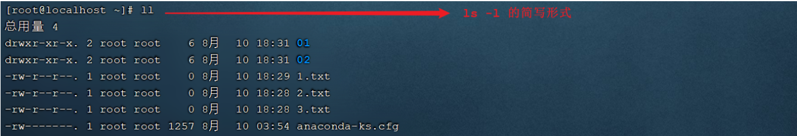
cd
- 作用: 用于切换当前工作目录，即进入指定目录
- 语法: cd [dirName]
- 特殊说明:
~ 表示用户的home目录
. 表示目前所在的目录
.. 表示目前目录位置的上级目录
- 举例:
cd .. 切换到当前目录的上级目录
cd ~ 切换到用户的home目录
cd /usr/local 切换到/usr/local目录
- 备注:
用户的home目录
root用户 /root
其他用户 /home/xxx
操作示例:

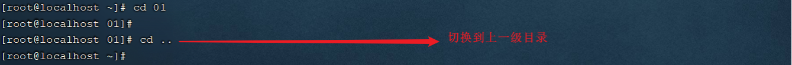
cd .. 切换到当前目录位置的上级目录; 可以通过 cd ../.. 来切换到上级目录的上级目录。
echo
创建文件并实现写入内容
touch
创建空文件;
mkdir
- 作用: 创建目录
- 语法:
mkdir [-p] dirName - 说明:
-p: 确保目录名称存在，不存在的就创建一个。通过此选项，可以实现多层目录同时创建
- 举例:
mkdir itcast 在当前目录下，建立一个名为itcast的子目录
mkdir -p itcast/test 在工作目录下的itcast目录中建立一个名为test的子目录，若itcast目录不存在，则建立一个
创建文件夹直接使用 这个命令就行
操作演示:
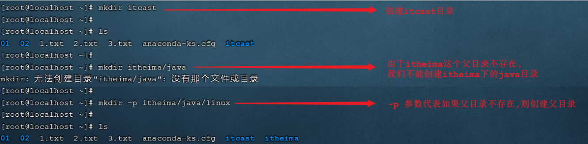
rm
- 作用: 删除文件或者目录
- 语法:
rm [-rf] name - 说明:
-r: 将目录及目录中所有文件（目录）逐一删除，即递归删除
-f: 无需确认，直接删除
- 举例:
rm -r itcast/ 删除名为itcast的目录和目录中所有文件，删除前需确认
rm
操作示例:
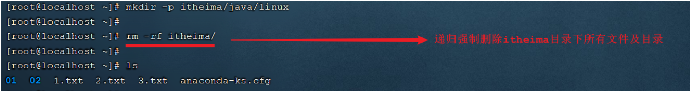
注意: 对于 rm -rf xxx 这样的指令，在执行的时候，一定要慎重，确认无误后再进行删除，避免误删。\
强制递归删除;
文件操作命令
cat 小文件 , 内容会全部查看
- 作用: 用于显示文件内容
- 语法:
cat [-n] fileName - 说明:
-n: 由1开始对所有输出的行数编号
- 举例:
cat /etc/profile 查看/etc目录下的profile文件内容
操作演示:

cat 指令会一次性查看文件的所有内容，如果文件内容比较多，这个时候查看起来就不是很方便了，这个时候我们可以通过一个新的指令more。
more对大文件实现分页查询 ;
作用: 以分页的形式显示文件内容
语法:
more fileName操作说明:
回车键 向下滚动一行
空格键 向下滚动一屏
b 返回上一屏
q或者Ctrl+C 退出more
举例：
more /etc/profile 以分页方式显示/etc目录下的profile文件内容
操作示例：
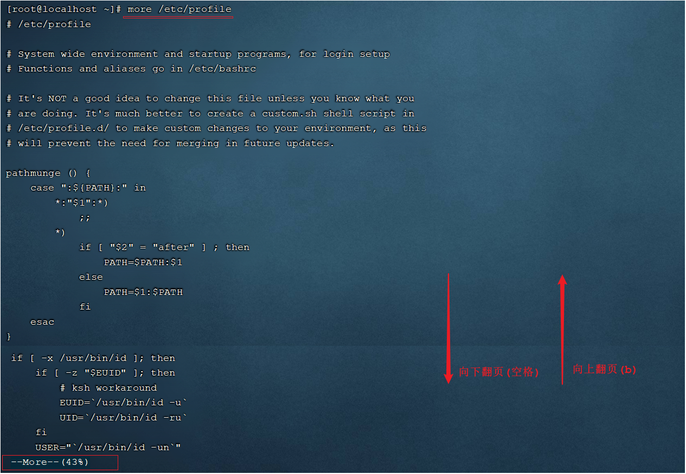
当我们在查看一些比较大的文件时，我们可能需要经常查询文件尾部的数据信息，那这个时候如果文件很大，我们要一直向下翻页，直到最后一页，去看最新添加的数据，这种方式就比较繁琐了，此时，我们可以借助于tail指令。
head
作用：查看文件开头的内容
语法：
head[``-n``]fileName说明:
-n ：输出文件开头的n行内容
举例：
head 1.log 默认显示1.log文件开头的10行内容
head -20 1.log 显示1.log文件开头的20行内容
tail
- 作用: 查看文件末尾的内容
- 语法: tail [-f] fileName
- 说明:
-f : 动态读取文件末尾内容并显示，通常用于日志文件的内容输出
举例:
tail /etc/profile 显示/etc目录下的profile文件末尾10行的内容
tail -20 /etc/profile 显示/etc目录下的profile文件末尾20行的内容
tail -f /itcast/my.log 动态读取/itcast目录下的my.log文件末尾内容并显示
操作示例：
A. 默认查询文件尾部10行记录
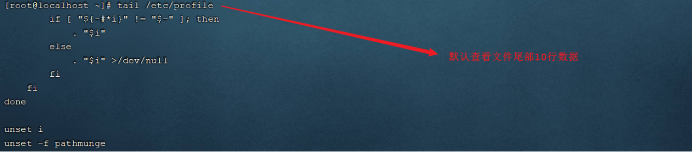
B. 可以通过指定参数设置查询尾部指定行数的数据
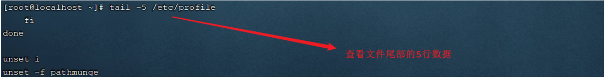
C. 动态读取文件尾部的数据
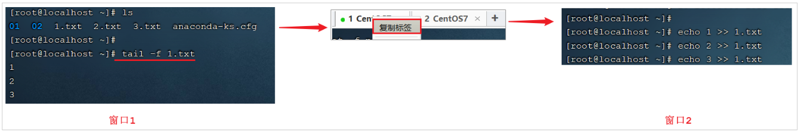
在窗口1中执行指令 tail -f 1.txt 动态查看文件尾部的数据。然后在顶部的标签中右键选择 "复制标签"，打开新的窗口2 , 此时再新打开的窗口2中执行指令 echo 1 >> 1.txt , 往1.txt文件尾部追加内容，然后我们就可以在窗口1中看到最新的文件尾部的数据。
如果我们不想查看文件尾部的数据了，可以直接使用快捷键 Ctrl+C ， 结束当前进程。
拷贝移动命令
cp
- 作用: 用于复制文件或目录
- 语法: cp [-r] source dest
- 说明:
-r: 如果复制的是目录需要使用此选项，此时将复制该目录下所有的子目录和文件
- 举例:
cp hello.txt itcast/ 将hello.txt复制到itcast目录中
cp hello.txt ./hi.txt 将hello.txt复制到当前目录，并改名为hi.txt
cp -r itcast/ ./itheima/ 将itcast目录和目录下所有文件复制到itheima目录下
cp -r itcast/* ./itheima/ 将itcast目录下所有文件复制到itheima目录下
操作示例:
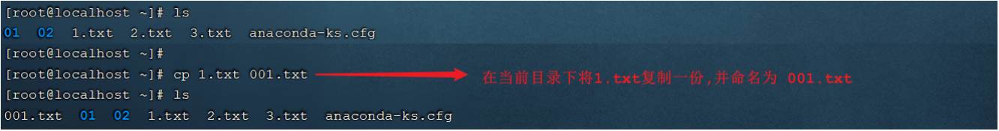


如果拷贝的内容是目录，需要加上参数 -r
mv
执行重命名 只有一个 规则 : 第二个参数没有存在文件 , 就可以实现 重命名 , 否则 移动 ;
作用: 为文件或目录改名、或将文件或目录移动到其它位置
语法: mv source dest
举例:
mv hello.txt hi.txt 将hello.txt改名为hi.txt
mv hi.txt itheima/ 将文件hi.txt移动到itheima目录中
mv hi.txt itheima/hello.txt 将hi.txt移动到itheima目录中，并改名为hello.txt
mv itcast/ itheima/ 如果itheima目录不存在，将itcast目录改名为itheima
mv itcast/ itheima/ 如果itheima目录存在，将itcast目录移动到itheima目录中
操作示例:
mv 命令既能够改名，又可以移动，具体是改名还是移动,系统会根据我们输入的参数进行判定(如果第二个参数dest是一个已存在的目录,将执行移动操作,其他情况都是改名)
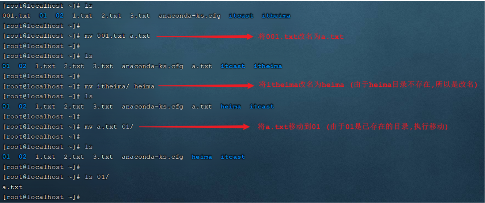
打包压缩命令
- 作用: 对文件进行打包、解包、压缩、解压
- 语法:
tar [-zcxvf] fileName创建后的包名[files]文件名
包文件后缀为.tar表示只是完成了打包，并没有压缩
包文件后缀为.tar.gz表示打包的同时还进行了压缩
说明:
-z: z代表的是gzip，通过gzip命令处理文件，gzip可以对文件压缩或者解压
-c: c代表的是create，即创建新的包文件 c , x 操作互相排斥 ; 吧
-x: x代表的是extract，实现从包文件中还原文件
-v: v代表的是verbose，显示命令的执行过程
-f: f代表的是file，用于指定包文件的名称
举例：
打包
tar -cvf hello.tar ./* 将当前目录下所有文件打包，打包后的文件名为hello.tar
tar -zcvf hello.tar.gz ./* 将当前目录下所有文件打包并压缩，打包后的文件名为hello.tar.gz
解包
tar -xvf hello.tar 将hello.tar文件进行解包，并将解包后的文件放在当前目录
tar -zxvf hello.tar.gz 将hello.tar.gz文件进行解压，并将解压后的文件放在当前目录
tar -zxvf hello.tar.gz -C /usr/local 将hello.tar.gz文件进行解压，并将解压后的文件放在/usr/local目录 添加使用 -C , 可以指定解包后的文件到那个目录下 ;
操作示例:
A. 打包
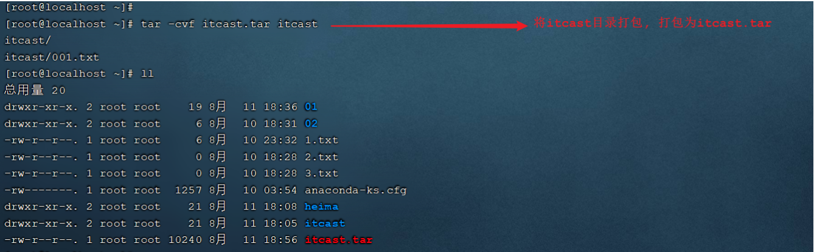
B. 打包并压缩

C. 解包
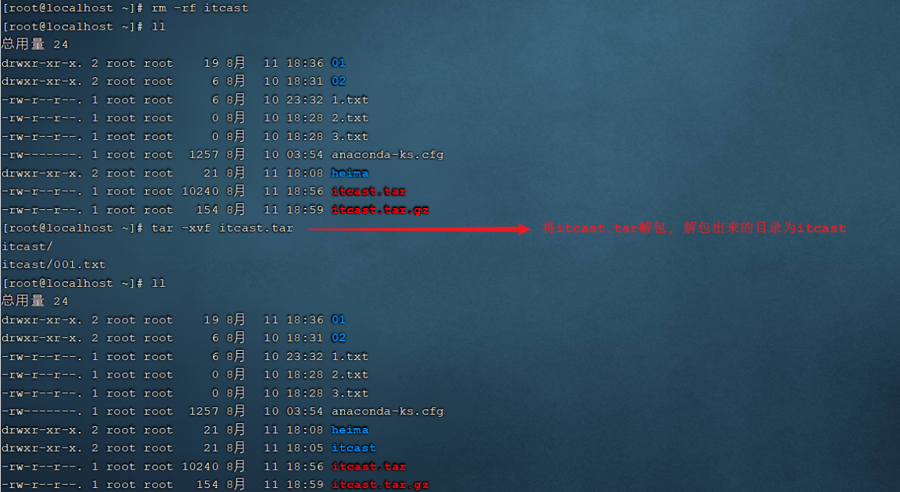
D. 解压
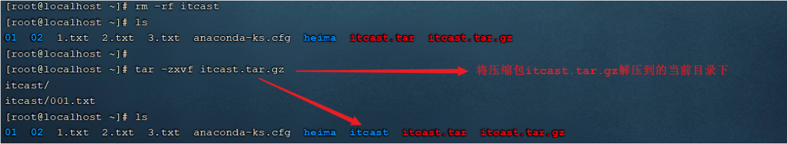
解压到指定目录,需要加上参数 -C
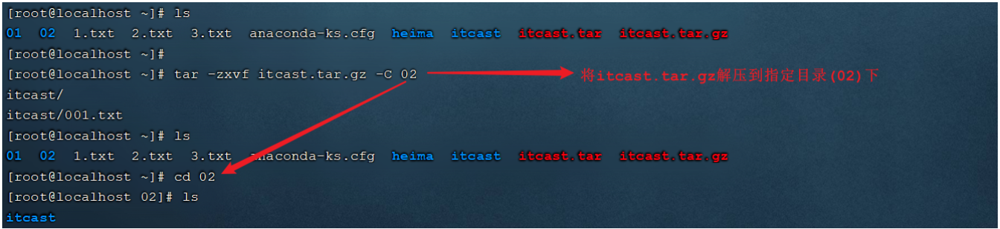
文本编辑命令
文本编辑的命令，主要包含两个: vi 和 vim，两个命令的用法类似，我们课程中主要讲解vim的使用。
vi & vim介绍
作用: vi命令是Linux系统提供的一个文本编辑工具，可以对文件内容进行编辑，类似于Windows中的记事本
语法: vi fileName
说明:
1). vim是从vi发展来的一个功能更加强大的文本编辑工具，编辑文件时可以对文本内容进行着色，方便我们对文件进行编辑处理，所以实际工作中vim更加常用。
2). 要使用vim命令，需要我们自己完成安装。可以使用下面的命令来完成安装：
yum install vim
vim安装
命令： yum install vim

安装过程中，会有确认提示，此时输入 y，然后回车，继续安装：
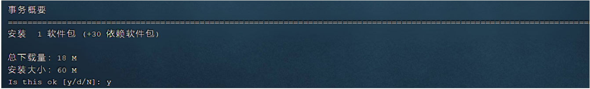
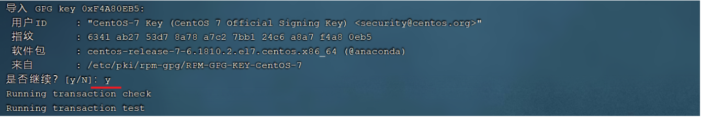
vim使用
作用: 对文件内容进行编辑，vim其实就是一个文本编辑器
语法: vim fileName
说明:
1). 在使用vim命令编辑文件时，如果指定的文件存在则直接打开此文件。如果指定的文件不存在则新建文件。
2). vim在进行文本编辑时共分为三种模式，分别是 命令模式（Command mode），插入模式（Insert mode）和底行模式（Last line mode）。这三种模式之间可以相互切换。我们在使用vim时一定要注意我们当前所处的是哪种模式。
三种模式:
命令模式
A. 命令模式下可以查看文件内容、移动光标（上下左右箭头、gg、G)
B. 通过vim命令打开文件后，默认进入命令模式
C. 另外两种模式需要首先进入命令模式，才能进入彼此
命令模式指令 | 含义 |
gg | 定位到文本内容的第一行 |
G | 定位到文本内容的最后一行 |
dd | 删除光标所在行的数据55 |
ndd | 删除当前光标所在行及之后的n行数据 |
u | 撤销操作 |
i 或 a 或 o | 进入插入模式(进入后光标所处的位置不同而已) |
插入模式
A. 插入模式下可以对文件内容进行编辑
B. 在命令模式下按下[i,a,o]任意一个，可以进入插入模式。进入插入模式后，下方会出现【insert】字样
C. 在插入模式下按下ESC键，回到命令模式
底行模式
A. 底行模式下可以通过命令对文件内容进行查找、显示行号、退出等操作
B. 在命令模式下按下[:,/]任意一个，可以进入底行模式
C. 通过/方式进入底行模式后，可以对文件内容进行查找
D. 通过:方式进入底行模式后，可以输入wq（保存并退出）、q!（不保存退出）、set nu（显示行号）
底行模式指令 | 含义 |
:wq | 保存并退出 |
:q! | 不保存退出 |
:set nu | 显示行号 |
:set nonu | 取消行号显示 |
:n | 定位到第n行，如 :10 就是定位到第10行 |
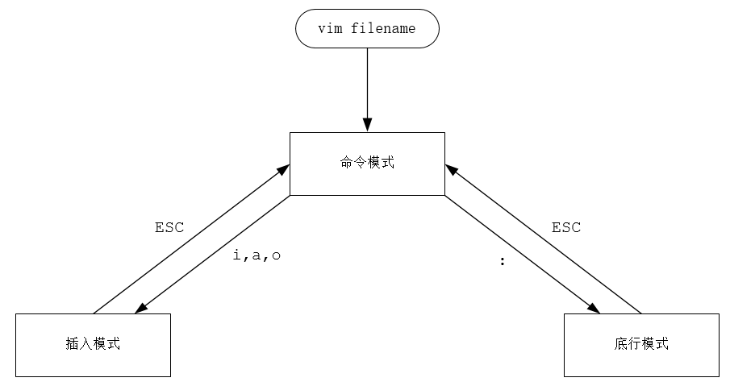
查找命令
find
作用: 在指定目录下查找文件
语法: find dirName -option fileName
举例:
find .–name"*.java``"在当前目录及其子目录下查找.java结尾文件find/itcast-name "*.java"在/itcast目录及其子目录下查找.java结尾的文件
操作示例:
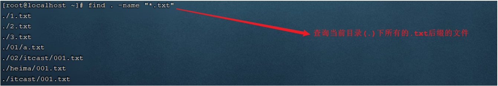
grep
作用: 从指定文件中查找指定的文本内容
语法:
grep word fileName选项：
-i: 检索的关键字忽略(ignore)大小写
-n: 显示关键字所在的这一行的行号
-A: 输出关键字所在行及之后(After)的几行记录 (如:-A5 表示输出关键字所在行之后的5行记录)
-B: 输出关键字所在行及之前(Before)的几行记录 (如:-B5 表示输出关键字所在行之前的5行记录)
举例:
grep Hello HelloWorld.java 查找HelloWorld.java文件中出现的Hello字符串的位置
grep hello *.java 查找当前目录中所有.java结尾的文件中包含hello字符串的位置
操作示例:
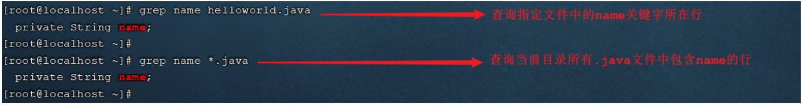
软件安装
总结 一下
1,解压 :
- 作用: 对文件进行打包、解包、压缩、解压
- 语法:
tar [-zcxvf] fileName创建后的包名[files]文件名
包文件后缀为.tar表示只是完成了打包，并没有压缩
包文件后缀为.tar.gz表示打包的同时还进行了压缩
说明:
-z: z代表的是gzip，通过gzip命令处理文件，gzip可以对文件压缩或者解压
-c: c代表的是create，即创建新的包文件 c , x 操作互相排斥 ; 吧
-x: x代表的是extract，实现从包文件中还原文件
-v: v代表的是verbose，显示命令的执行过程
-f: f代表的是file，用于指定包文件的名称
移动 mv , 后面的路径要保证存在 ;
2.进入解压后文档
3.配置环境变量 :
echo 'export MYSQL_HOME=/usr/local/mysql' >> /etc/profile
echo 'export PATH=$MYSQL_HOME/bin:$PATH' >> /etc/profile
source /etc/profile
软件安装方式
在Linux系统中，安装软件的方式主要有四种，这四种安装方式的特点如下：
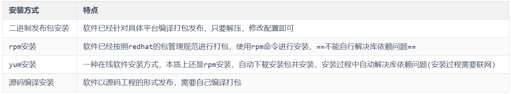
安装JDK
上述我们介绍了Linux系统软件安装的四种形式，接下来我们就通过第一种(二进制发布包)形式来安装JDK。 JDK对应的二进制发布包，在课程资料中已经提供，如下：
JDK具体安装步骤如下：
1). 上传安装包
使用FinalShell自带的上传工具将jdk的二进制发布包上传到Linux
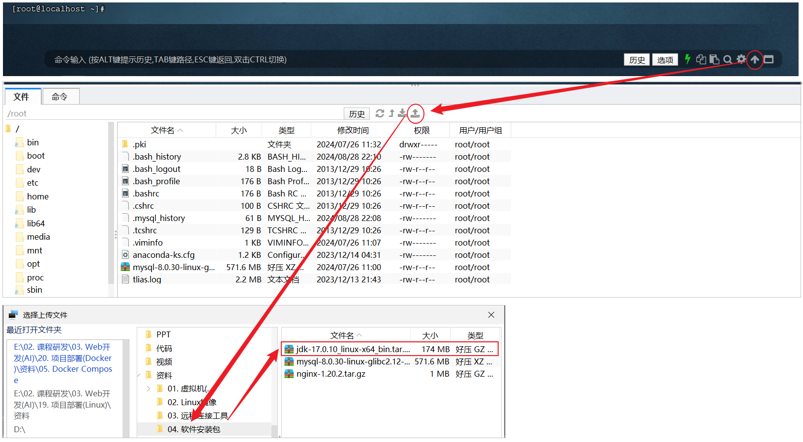
由于上述在进行文件上传时，选择的上传目录 /root，上传完毕后，我们执行指令 cd /root 切换到根目录下，查看上传的安装包。
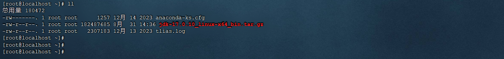
2). 解压安装包
执行如下指令，将上传上来的压缩包进行解压，并通过-C参数指定解压文件存放目录为 /usr/local。
tar -zxvf jdk-21_linux-x64_bin.tar.gz -C /usr/local/

3). 配置环境变量
使用vim命令修改/etc/profile文件，在文件末尾加入如下配置
export JAVA_HOME=/usr/local/jdk-17.0.10
export PATH=$JAVA_HOME/bin:$PATH
具体操作指令如下:
1). 编辑/etc/profile文件，进入命令模式
vim /etc/profile
2). 在命令模式中，输入指令 G ， 切换到文件最后
G
3). 在命令模式中输入 i/a/o 进入插入模式，然后切换到文件最后一行
i
4). 将上述的配置拷贝到文件中
export JAVA_HOME=/usr/local/jdk-17.0.10
export PATH=$JAVA_HOME/bin:$PATH
5). 从插入模式，切换到指令模式
ESC
6). 按:进入底行模式，然后输入wq，回车保存
:wq
4). 重新加载profile文件
为了使更改的配置立即生效，需要重新加载profile文件，执行命令:
source /etc/profile
5). 检查安装是否成功
java -version
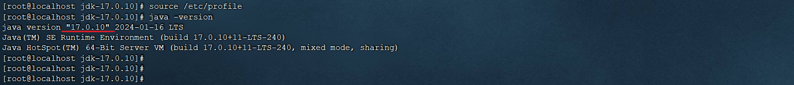
安装MySQL
MySQL安装
对于MySQL数据库的安装，我们将要使用前面讲解的第一种安装方式进行安装。
1). 准备工作
在安装MySQL数据库之前，我们需要先检查一下当前Linux系统中，是否安装的有MySQL的相关服务（很多linux安装完毕之后，自带了低版本的mysql的依赖包），如果有，先需要卸载掉，然后再进行安装。
A. 通过rpm相关指令，来查询当前系统中是否存在已安装的mysql软件包，执行指令如下：
rpm -``qa查询当前系统中安装的所有软件rpm -qa|grep mysql查询当前系统中安装的名称带mysql的软件rpm -qa| grep mariadb查询当前系统中安装的名称带mariadb的软件
通过rpm -qa 查询到系统通过rpm安装的所有软件，太多了，不方便查看，所以我们可以通过管道符 | 配合着grep进行过滤查询。
通过查询，我们发现在当前系统中存在mariadb数据库，是CentOS7中自带的，而这个数据库和MySQL数据库是冲突的，所以要想保证MySQL成功安装，需要卸载mariadb数据库。
**RPM：**全称为 Red-Hat Package Manager，RPM软件包管理器，是红帽Linux用于管理和安装软件的工具。
B. 通过 rpm 相关指令，来卸载对应的组件，执行指令如下：
在rpm中，卸载软件的语法为：rpm -e --nodeps 软件名称
那么，我们就可以通过指令，卸载 mariadb，具体指令为： rpm -e --nodeps mariadb-libs-5.5.60-1.el7_5.x86_64
我们看到执行完毕之后， 再次查询 mariadb，就查不到了，因为已经被成功卸载了。
2). 将资料中提供的MySQL安装包上传到Linux并解压
A. 上传MySQL安装包
在课程资料中，提供的有MySQL的安装包 ，我们需要将该安装包上传到Linux系统的根目录 /root 下面。
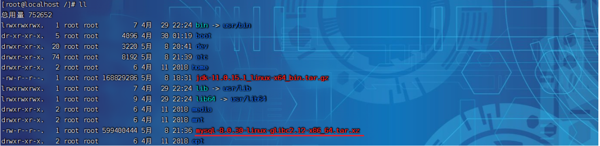
B. 解压到 当前目录
执行如下指令:
tar -xvf mysql-8.0.30-linux-glibc2.12-x86_64.tar.xz

C. 将解压后的文件夹移动到 /usr/local 目录下， 并改名为 mysql
mv mysql-8.0.30-linux-glibc2.12-x86_64 /usr/local/mysql
cd /usr/local/mysql
3). 配置系统环境变量
配置MySQL的环境变量, 通过vi编辑器编辑 /etc/profile 文件, 在尾部追加:
export MYSQL_HOME=/usr/local/mysql
export PATH=$MYSQL_HOME/bin:$PATH
并执行如下指令, 注册MySQL为系统服务:
cp /usr/local/mysql/support-files/mysql.server /etc/init.d/mysql
chkconfig --add mysql
5). 初始化数据库
#创建一个用户组, 组名就叫mysql
groupadd mysql
#创建一个系统用户 mysql, 并归属于用户组 mysql
useradd -r -g mysql -s /bin/false mysql
#初始化mysql
mysqld --initialize --user=mysql --basedir=/usr/local/mysql --datadir=/usr/local/mysql/data
执行上述指令时, 会输入如下日志，在日志中就输出了MySQL中root用户的一个临时密码【记得复制出来，记录下来】：
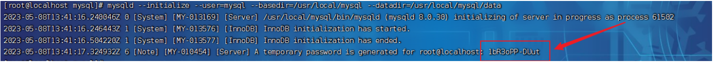
启动MySQL
A. 启动MySQL服务
systemctl start mysql
B. 通过命令, 登录MySQL
#xxxxx 代表上述生成的root的临时密码
mysql -uroot -pxxxxx
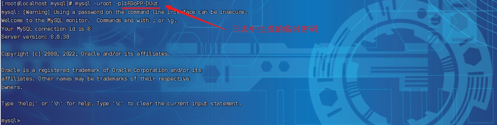
配置MySQL
A. 修改root用户的密码
ALTER USER 'root'@'localhost' IDENTIFIED WITH mysql_native_password BY '1234';
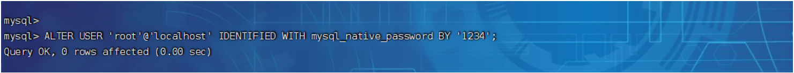
注意: 这个root账号仅仅能够在本机localhost上访问，我们在windows上是无法访问的。如果需要在window上或其他服务器上也能远程访问，需要创建一个账号，用于远程访问的。
B. 创建账号, 并授权远程访问
CREATE USER 'root'@'%' IDENTIFIED BY '1234';
GRANT ALL PRIVILEGES ON *.* TO 'root'@'%';
FLUSH PRIVILEGES;
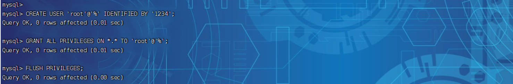
我们已经开启了MySQL的远程访问的权限，为什么还是连接不上MySQL服务器呢？？ 这是因为Linux系统的防火墙，将我们的访问拦截了。
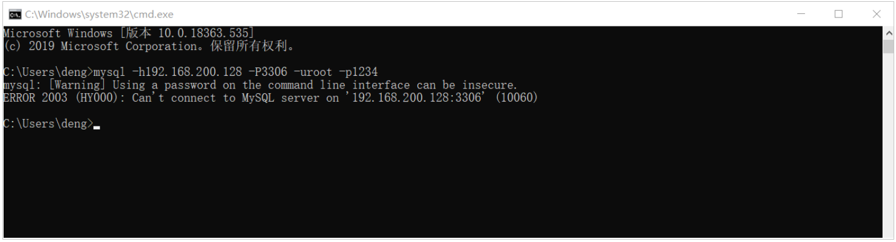
防火墙操作
Linux系统安装完毕后，系统启动时，防火墙自动启动，防火墙拦截了所有端口的访问。接下来我们就需要学习一下，如何操作防火墙，具体指令如下：
操作 | 指令 | 备注 |
查看防火墙状态 | systemctl status firewalld / firewall-cmd --state | |
暂时关闭防火墙 | systemctl stop firewalld | |
永久关闭防火墙(禁用开机自启) | systemctl disable firewalld | 下次启动,才生效 |
暂时开启防火墙 | systemctl start firewalld | |
永久开启防火墙(启用开机自启) | systemctl enable firewalld | 下次启动,才生效 |
开放指定端口 | firewall-cmd --zone=public --add-port=8080/tcp --permanent | 需要重新加载生效 |
关闭指定端口 | firewall-cmd --zone=public --remove-port=8080/tcp --permanent | 需要重新加载生效 |
立即生效(重新加载) | firewall-cmd --reload | |
查看开放端口 | firewall-cmd --zone=public --list-ports |
注意： 要想在windows上能够访问MySQL，需要开放防火墙的3306端口 或者 直接关闭防火墙 ，执行如下指令:
#开发防火墙的3306端口号
firewall-cmd --zone=public --add-port=3306/tcp --permanent
#重新加载
firewall-cmd --reload
#查看开放的端口号
firewall-cmd --zone=public --list-ports
或者直接关闭防火墙:
systemctl stop firewalld
连接测试
关闭掉linux系统的防火墙之后，我们就可以打开windows上的命令行，通过mysql的客户端(命令行/图形化界面)来连接远程linux上安装的MySQL数据库了。
1). 客户端连接
2). 打开DataGrip图形化工具连接

执行资料中提供的SQL脚本 tlias.sql 。
安装Nginx
安装
Nginx的安装包，从官方下载下来的是c语言的源码包，我们需要自己编译安装。具体操作步骤如下：
1). 安装Nginx运行时需要的依赖
yum install -y pcre pcre-devel zlib zlib-devel openssl openssl-devel
安装C语言的编译环境.
yum install gcc-c++
2). 上传Nginx的源码包
3). 解压源码包到当前目录
tar -zxvf nginx-1.20.2.tar.gz
4). 进入到解压目录后，执行指令
#进入解压目录
cd nginx-1.20.2
#执行命令配置, 生成Makefile文件
./configure --prefix=/usr/local/nginx
5). 执行命令进行编译和安装
#编译
make
#编译安装
make install
启动Nginx
注意要提前开放 linux 中的80端口号 ';
进入到nginx安装目录/usr/local/nginx，启动nginx服务
cd /usr/local/nginx/
sbin/nginx
启动完毕之后，我们可以通过 ps 指令查询当前系统中的nginx进程，从而确认nginx是否启动 。

然后，我们就可以打开浏览器，访问服务器上的nginx 。
项目部署
前端项目部署
1). 将nginx的安装目录的html中的静态资源文件先删除掉。
2). 将资料中提供的 "资料/06. 项目部署/前端/页面资源" 目录下的静态资源文件，全部上传到nginx安装目录下的 html 目录中.
3). 修改资料中提供的 nginx.conf 配置文件，将其上传到nginx安装目录下的 conf 目录中.
4). 重新加载nginx服务的配置文件
#重新加载配置文件
sbin/nginx -s reload
5). 再次访问nginx (可能会存在浏览器缓存, 可以按Ctrl+F5, 强制刷新清理缓存)
nginx服务常见操作指令:
- 启动: sbin/nginx
- 重载: sbin/nginx -s reload
- 停止: sbin/nginx -s stop
后端项目部署
之前我们讲解Linux操作系统时，就提到，我们服务端开发工程师学习Linux系统的目的就是将来我们开发的项目绝大部分情况下都需要部署在Linux系统中。
环境准备
需要修改的配置 : 数据库中的 地址 : 将本地的127 修改为自己的 IP 地址 , 还需要修改 本地运行日志 的log存放位置 ;
那现在，项目要上线了，要部署到linux服务器上了，我们也需要使用linux服务器上所安装的mysql数据库。
那此时，我们就可以再准备一份文件 application.yml 将里面的配置的mysql的ip地址及相关配置信息修改一下（配置Linux上安装的MySQL的信息）：
#配置数据库连接信息
spring:
datasource:
driver-class-name: com.mysql.cj.jdbc.Driver
url: jdbc:mysql://192.168.100.128:3306/tlias
username: root
password: 1234
servlet:
multipart:
max-file-size: 10MB #单个文件最大大小限制10MB
max-request-size: 100MB #单个请求最大大小限制100MB
#配置mybatis的日志输出到控制台
mybatis:
configuration:
log-impl: org.apache.ibatis.logging.stdout.StdOutImpl
#配置mybatis的驼峰命名的映射开关
map-underscore-to-camel-case: true
#查看事务管理的日志
logging:
level:
org.springframework.jdbc.support.JdbcTransactionManager: debug
#阿里云oss配置
aliyun:
oss:
endpoint: https://oss-cn-beijing.aliyuncs.com
bucketName: java422-web-ai
改造完毕之后，可以在本地的idea中先启动当前项目，然后访问一下，看看工程是否正常访问。
打包部署
1). 执行 package 指令，进行打包操作，将当前的springboot项目，打成一个jar包。 (跳过测试)
2). 在Linux服务器上创建一个目录，将jar包上传到服务器 。
mkdir -p /usr/local/app
3). 通过java命令，启动项目
#进入目录/usr/local/app
cd /usr/local/app
#运行jar包
java -jar tlias-web-management-0.0.1-SNAPSHOT.jar

项目启动起来之后，就可以打开浏览器测试啦。
阿里云OSS秘钥配置
由于在开发的时候，我们将访问阿里云OSS的AccessKeyId，AccessKeySecret都配置在了系统的环境变量中了。那现在项目部署到了Linux服务器中，调用阿里云OSS进行文件上传时，程序就会获取Linux系统中的环境变量。所以此时，我们需要将AccessKeyId，AccessKeySecret配置为Linux系统的环境变量。
1). 查看Windows系统之前配置的环境变量
echo %OSS_ACCESS_KEY_ID%
echo %OSS_ACCESS_KEY_SECRET%
我们将上述自己的 AccessKeyId 与 AccessKeySecret 复制出来，然后在linux系统中配置环境变量。
2). 执行如下指令：
echo "export OSS_ACCESS_KEY_ID=YOUR_OSS_ACCESS_KEY_ID" >> /etc/profile
echo "export OSS_ACCESS_KEY_SECRET=YOUR_OSS_ACCESS_KEY_SECRET" >> /etc/profile
source /etc/profile
**注意!!!：**上述的绿色背景部分，是自己的阿里云OSS账号的 OSS_ACCESS_KEY_ID， OSS_ACCESS_KEY_SECRET，一个字符都不能错，在记事本中将命令组装好，然后再到命令行中执行。
**注意!!!：**上述的绿色背景部分，是自己的阿里云OSS账号的 OSS_ACCESS_KEY_ID， OSS_ACCESS_KEY_SECRET，一个字符都不能错，在记事本中将命令组装好，然后再到命令行中执行。
**注意!!!：**上述的绿色背景部分，是自己的阿里云OSS账号的 OSS_ACCESS_KEY_ID， OSS_ACCESS_KEY_SECRET，一个字符都不能错，在记事本中将命令组装好，然后再到命令行中执行。
执行完毕后，将finalShell的窗口关闭掉，重新打开一个新窗口（让环境变量生效），重新运行项目测试。
当前程序中存在的问题:
- 线上程序不会采用控制台霸屏的形式运行程序，而是将程序在后台运行
- 线上程序不会将日志输出到控制台，而是输出到日志文件，方便运维查阅信息
要解决上述这两个问题，我们就可以通过 nohup 指令让程序在后台运行。
后台运行
管道符号 : | 可以把前面的输出 当作后面的 输入 ;
1). 后台运行程序 开启服务器 使用的命令 :
nohup java -jar tlias-web-management-0.0.1-SNAPSHOT.jar &> tlias.log &
通过上述指令就可以后台运行服务，服务运行之后， 所有的日志信息都会输出到 tlias.log 文件中。
2). 停止服务
#查看服务的进程信息
ps -ef|grep tlias
#杀掉进程
kill -9 xxxxx
nohup命令说明:
**nohup命令：**英文全称 no hang up（不挂起），用于不挂断地运行指定命令，退出终端不会影响程序的运行
语法格式：
nohup command [ args … ] [&]参数说明：
command：要执行的命令
args：一些参数，可以指定输出文件
&：让命令在后台运行
举例：
nohup java -jar boot工程.jar &> hello.log &
上述指令的含义为： 后台运行 java -jar 命令，并将日志输出到hello.log文件